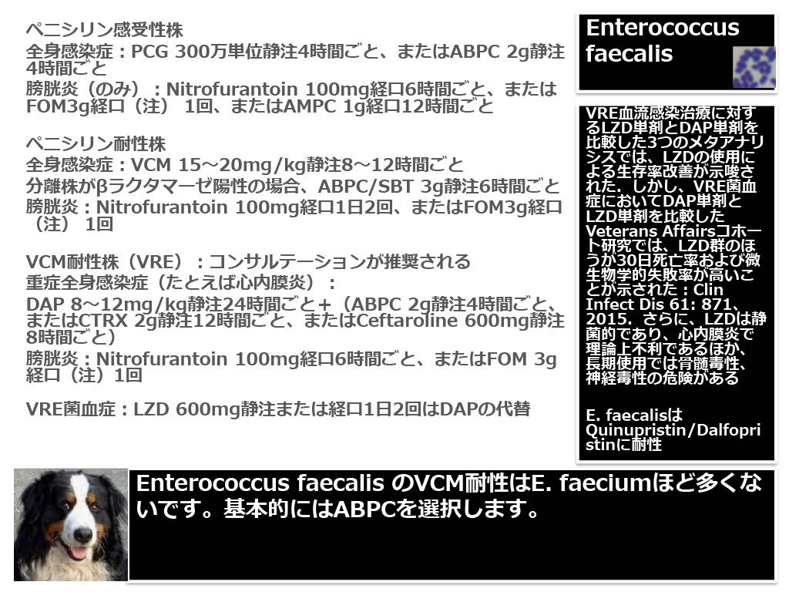
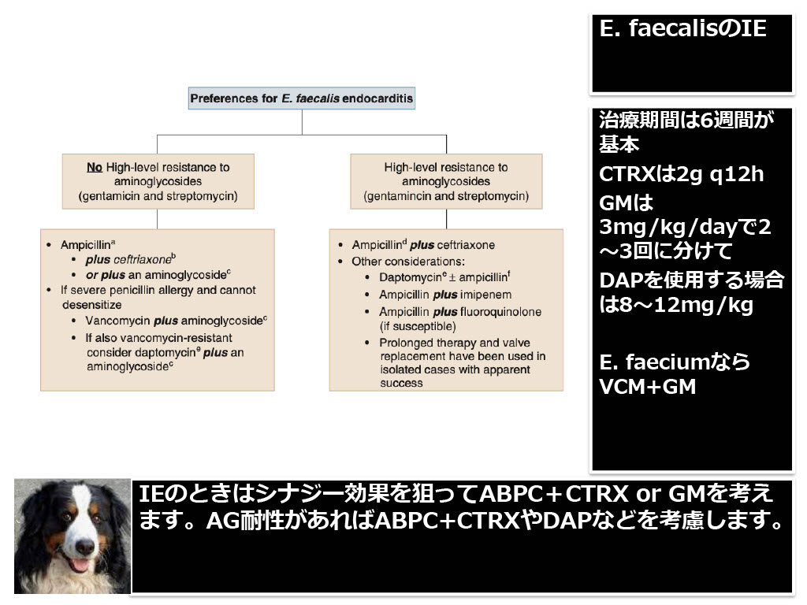
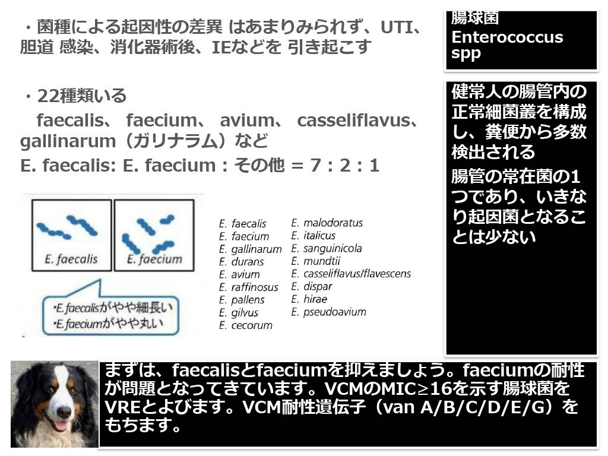
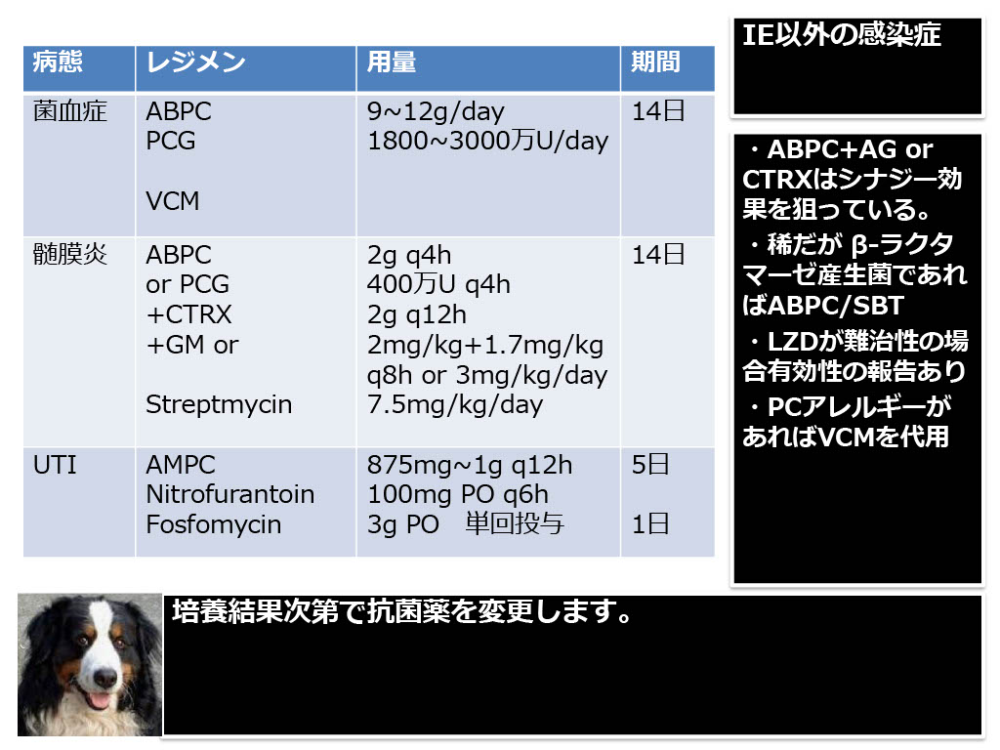

シェーマ／参考図（後藤先生資料） 撮影：ICU関谷




分類・特徴
- グラム染色
- 陽性球菌（短鎖／ペア）
- 常在
- 消化管
- 耐性
- セファロスポリン全て無効（intrinsic）
- 感受性
- 多くがアンピシリン感受性（faecium と異なる）
出典：Open Evidence で更新予定
主な感染症
- UTI（尿道カテーテル関連で多い）
- 腹腔内感染（胆道・術後）
- 感染性心内膜炎（IE、亜急性）
- カテーテル関連菌血症
出典：Open Evidence で更新予定
抗菌薬選択
UTI／一般
- アンピシリン
IE
- ABPC ＋ セフトリアキソン
DAA（ABPC+CTRX）が主流に。 - ABPC ＋ ゲンタマイシン
出典：Open Evidence で更新予定